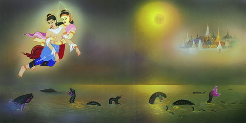
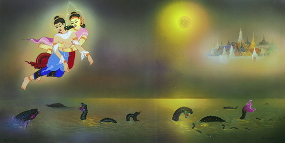

เฉลิมชัย
โฆษิตพิพัฒน์
เฉลิมชัย โฆษิตพิพัฒน์ เกิด ๑๕ กุมภาพันธ์ พ.ศ.๒๔๙๘ เป็นจิตรกรไทยมีผลงานจิตรกรรมไทยหลายผลงาน เช่น ภาพจิตรกรรมไทยในอุโบสถวดพุทธประทีป กรุงลอนดอน ประเทศอังกฤษ, เขียนภาพประกอบบทพระราชนิพนธ์พระมหาชนกและผลงานศิลปะที่วัดร่องขุ่น ซึ่งมีทั้งงานสถาปัตยกรรม ประติมากรรมปูนปั้น และงานจิตรกรรมไทย ได้รับการยกย่องเป็นศิลปินแห่งชาติ สาขาทัศนศิลป์(จิตรกรรม) ในปีพ.ศ.๒๕๕๔

ประหยัด
พงษ์ดำ
ศาสตราจารย์เกียรติคุณประหยัด พงษ์ดำ เกิด ๒๘ ตุลาคม พ.ศ.๒๔๗๗ และ เสียชีวิต ๑๙ กันยายน พ.ศ.๒๕๕๗ ศิลปินแห่งชาติ สาขาทัศนศิลป์(ภาพพิมพ์) ประจำปีพ.ศ.๒๔๔๑, อดีตคณบดี คณะจิตรกรรม ประติมากรรม และภาพพิมพ์ มหาวิทยาลัยศิลปากร
 


ปรีชา
เถาทอง
ศาสตราจารย์ปรีชา เถาทอง เกิด ๒๗ เมษายน พ.ศ.๒๔๙๑ ได้รับการเชิดชูเกียรติในฐานะศิลปินแห่งชาติ สาขาทัศนศิลป์ สาขาย่อยการ(จิตรกรรม) ประจำปีพ.ศ.๒๕๕๒ จบการศึกษาระดับปริญญาตรี ศิลปบัณฑิต จิตรกรรม (เกียรตินิยมอันดับ ๒) มหาวิทยาลัยศิลปากร กรุงเทพมหานคร ได้รับทุนไป ศึกษาที่ L'Accademia di belle Arte ณ กรุงโรม ประเทศอิตาลี ในปี พ.ศ.๒๕๑๙ และ จบการศึกษาระดับปริญญาโท ศิลปมหาบัณฑิต จิตรกรรม มหาวิทยาลัยศิลปากร กรุงเทพมหานคร
พิชัย
นิรันต์
นายพิชัย นิรันต์ เกิด ๗ กุมภาพันธ์ พ.ศ.๒๕๗๙ ได้รับการยกย่องเชิดชูเกียรติเป็นศิลปินแห่งชาติ สาขาทัศนศิลป์ (จิตรกรรม) ประจำปีพ.ศ.๒๕๔๖